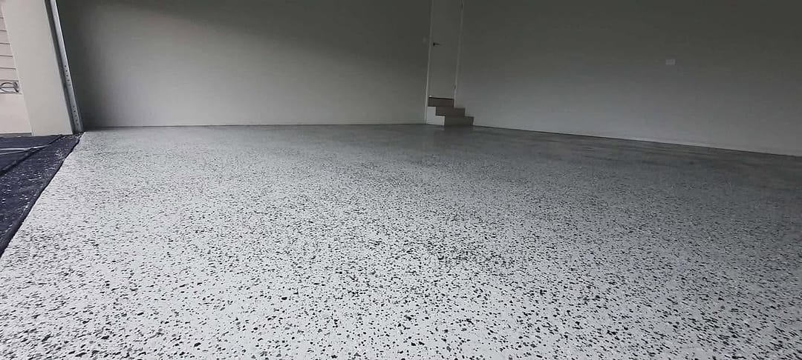
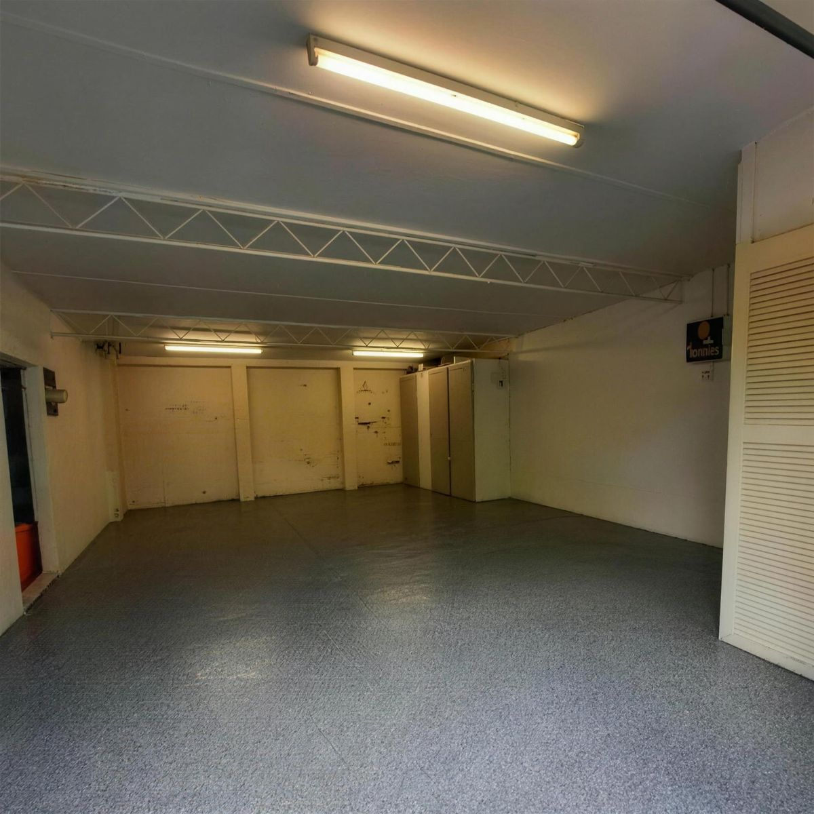
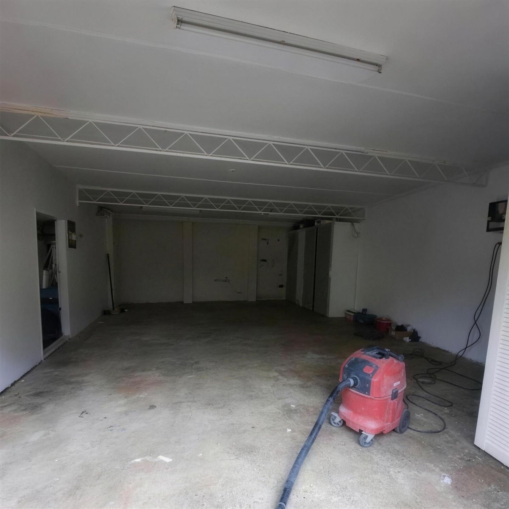
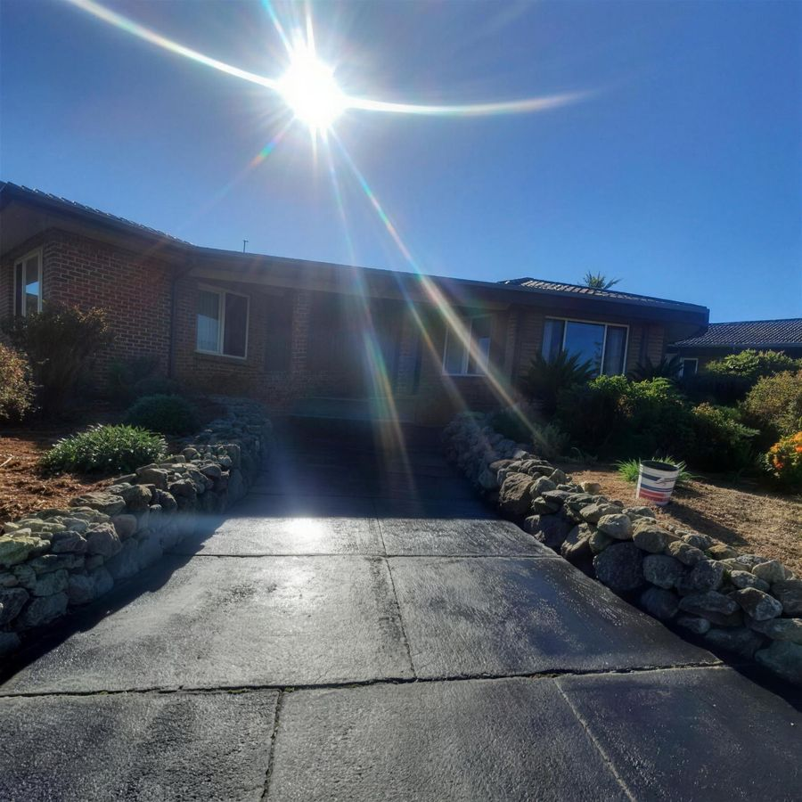
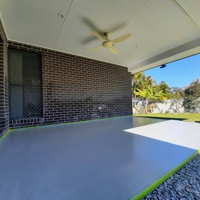
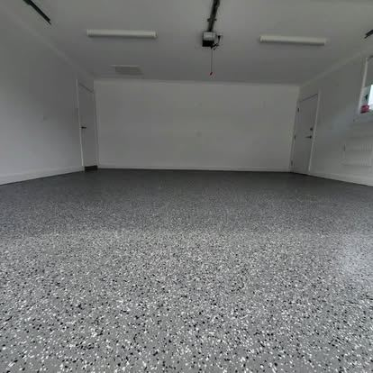
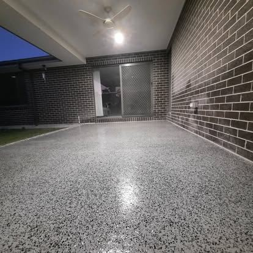
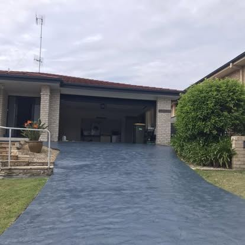
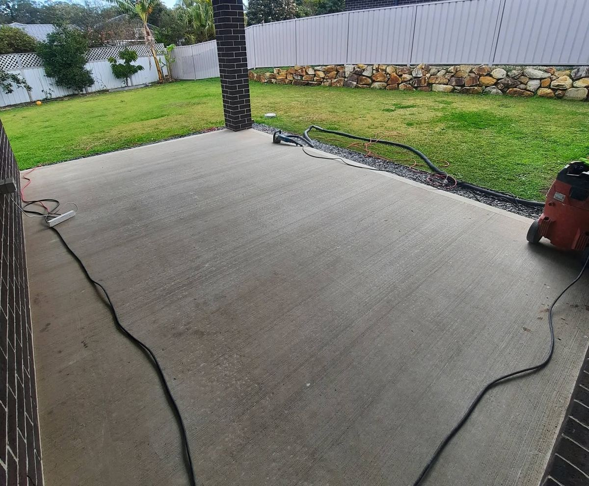

★★★★★
“Jarrod and his team did a fantastic job at my house very satisfied with the results and how professional he is , would highly recommend this company”

epoxy & concrete coatings — forster, taree & the mid north coast
garage floors, driveways and concrete coatings across the mid north coast. every slab is ground back before anything goes down — which is the part that decides whether it lasts.
would highly recommend this company— reece hawes, google free on-site floor assessment
the finish is high quality— miranda, google fixed, itemised price in writing owner-led — jarrod sets the prep standard
restored our stone surfaces to a beautiful, high-quality finish— miranda bell, google you walk the floor before the balance is paid forster · taree · harrington · blueys beach
what we coat
The finish changes with the room. What happens underneath it doesn't.

Flake broadcast over a properly ground slab. Hides what a working garage collects, grips better than a smooth gloss, and takes hot tyres.
see garage floors →
Kerb to garage door. Weathered, patchy concrete ground back, repaired where appropriate, then coated and sealed for sun and salt air.
see recent work →
Shed conversions, alfresco slabs, paths and surrounds. Quieter finishes for floors you live on rather than park on.
see recent work →
Diamond grinding with extraction running, and the removal of coatings that have already lifted. The job most quotes leave out.
see the process →Not sure which one your floor is? Ask at the assessment — it's free either way.
the difference
The same floor on two days. Bare, stained slab on one side; full grey flake on the other.


Garage — full flake broadcast


Driveway — resurfaced and sealed
Both pairs are the same floor on two different days, shot from the same spot. We haven't staged a comparison, brightened the "after", or used anyone else's job. When the only proof a small business can offer is its own work, it has to be the real thing.
See the full project recordthe collection
Four finishes we have actually laid, and four different jobs. The right one is decided by how the room is used.
Vinyl chips broadcast into the wet build coat, then locked under a clear topcoat. It is the finish we recommend most often for garages, because it hides the marks a working garage collects instead of showing every one of them.
Weathered, patchy concrete ground back, repaired where appropriate, then coated and sealed kerb to garage door. The finish most of our exterior work uses, and the one that has to survive sun and salt air rather than tyres.
The slab itself, ground back and sealed, keeping the concrete's own colour and aggregate rather than covering it. The quietest of the four, and the one that suits a room you live in rather than park in.

One colour, no chips, no pattern — the plainest thing we do and sometimes the right thing. It shows marks more readily than flake, which is the trade-off, so it suits a slab that gets walked on rather than parked on and worked on.
recent work







how we do it
The finish takes hours. Everything that makes it last happens underneath it, in the days before.
On site, free. Cracks, contamination, existing coatings, potential moisture concerns, and how the space actually gets used — parked on, walked on, hosed down. You get a written read on your concrete whether or not you go ahead with us.
Diamond grinding removes the weak surface layer and cuts a profile into the concrete so the system has something to key into. Industrial extraction keeps the dust out of the rest of the house. This is the stage a cheap quote leaves out, and the stage that decides the outcome.
Cracks, chips and damaged areas are repaired where appropriate — concrete keeps moving, so no one can promise to eliminate them permanently, and we'll show you on site which cracks are which. Then the primer and build coat go down.
Flake, a solid colour, or nothing broadcast at all — whichever suits what the room is for. This is the only part of the job anyone photographs, and it is the fastest part of the week.
The clear topcoat goes on, then you inspect the finished floor with us before the balance is paid. Curing times, when vehicles can go back on, and how to clean it are all covered at handover — with the actual figures for your floor.
why floors fail
Nearly every failure people describe traces back to one thing: the slab was never properly prepared.
Lifting & peeling
The coating never keyed into the concrete. Usually acid etching instead of mechanical grinding, or a slab that was still contaminated.
Hot-tyre pickup
Warm tyres soften a weakly bonded coating and lift it off in patches, right where you park.
Yellowing
Direct sun on a topcoat never intended for UV exposure. Common on driveways and roller-door thresholds.
Bubbling & patchiness
Moisture moving up through the slab, or product applied outside its conditions. Both are assessment problems, not bad luck.
Dusting
A weak surface layer left in place. It keeps shedding fine grit no matter how often the floor is swept.
It is also the first thing quietly cut when a quote gets sharpened — which is exactly why the cheapest number in your inbox is usually the one that comes back. If a coating on your floor has already failed, that is a job we take on: the old one comes off as part of the preparation.
what customers say
We're a small operation, so here they are exactly as they were written. We haven't cherry-picked — there is nothing to cherry-pick from.
★★★★★
“Jarrod and his team did a fantastic job at my house very satisfied with the results and how professional he is , would highly recommend this company”
★★★★★
“We had an epoxy floor installed in our shed conversion and it’s completely transformed the space. It looks great and is super easy to maintain. Jarrod was super helpful and efficient, the finish is high quality. Really happy with the result and would definitely recommend.”
★★★★★
“I recently had the pleasure of working with Jarred from Floor Candy and I couldn’t be happier with the results. His expertise in natural stone polishing is outstanding—he restored our stone surfaces to a beautiful, high-quality finish that…”
Rating and review count verified on the Floor Candy Google Business Profile, 10 August 2026.
no cost, no obligation
Jarrod comes to you, looks at the actual concrete, and leaves you with something in writing — whether or not you go ahead with us.
Takes about 30 seconds to book. We'll confirm a time that suits you.
Got it — thanks.
Jarrod will call you to confirm a time for the assessment. If it's urgent, ring 0435 193 845.
where we work
Floor Candy is mobile — we work at your property. There is no public showroom to visit.
Travel outside the Mid North Coast depends on the size and timing of the job. The quickest way to find out is to ask.
straight answers
If your question isn't here, ring us — you'll speak to Jarrod, not a call centre.
0435 193 845You can, and plenty of people do. The difference is almost entirely in the preparation. A kit is applied to the slab as it is; we mechanically grind the surface back first, extract the dust, and repair what needs repairing before anything goes down.
That is why kit floors are the ones you see lifting at the tyre tracks after a season. If a DIY floor has already failed, that is a job we take on — the old coating comes off as part of the preparation.
Lifting is a bond problem, and bond is decided during preparation. Mechanical grinding, proper extraction, and specifying the system after we have seen the slab are how that risk is managed.
What we will not do is promise an outcome for concrete we have not inspected. If your slab has a moisture issue, we would rather tell you at the assessment than after the coating is down.
Cracks, chips and damaged areas are repaired where appropriate as part of the preparation. Existing or moving cracks cannot be permanently eliminated — concrete keeps moving, and anyone who tells you otherwise is overselling. We will show you which cracks are which on site.
It depends on the system specified for your slab, so we give you the actual figures for your floor at handover rather than a blanket promise here. Curing, when vehicles can go back on, and how to clean it are all covered in the handover guidance.
Texture varies by finish. A full flake broadcast has noticeably more grip underfoot than a smooth gloss, which matters most in wet areas and on exterior work. Tell us how the space is used and we will talk through the trade-off honestly at the assessment.
We do not publish prices, because the honest answer depends on the slab. Size, the condition of the concrete, whether there is an existing coating to remove, access, and the finish you choose all move it.
What you get instead is a fixed, itemised price in writing after we have seen the floor — not a range that changes on the day.
You receive a written scope and quote before committing to anything. A booking deposit may be required to secure your date and order materials. Every project finishes with a final walkthrough, so you can inspect the completed surface before paying the remaining balance.
Our core area is Forster, Taree, Harrington, Blueys Beach and the surrounding Mid North Coast. That is where we work week to week, and where an assessment can usually be arranged quickly.
We also take on selected projects across Newcastle, Maitland and Sydney. Whether we can travel comes down to the size and timing of the job, so it is worth asking — the service areas page has the detail.

forster · taree · mid north coast
Book a free on-site assessment and find out what your concrete actually needs — before anyone quotes you a number.
Costs nothing. No obligation. Mon–Fri, 7am–7pm.